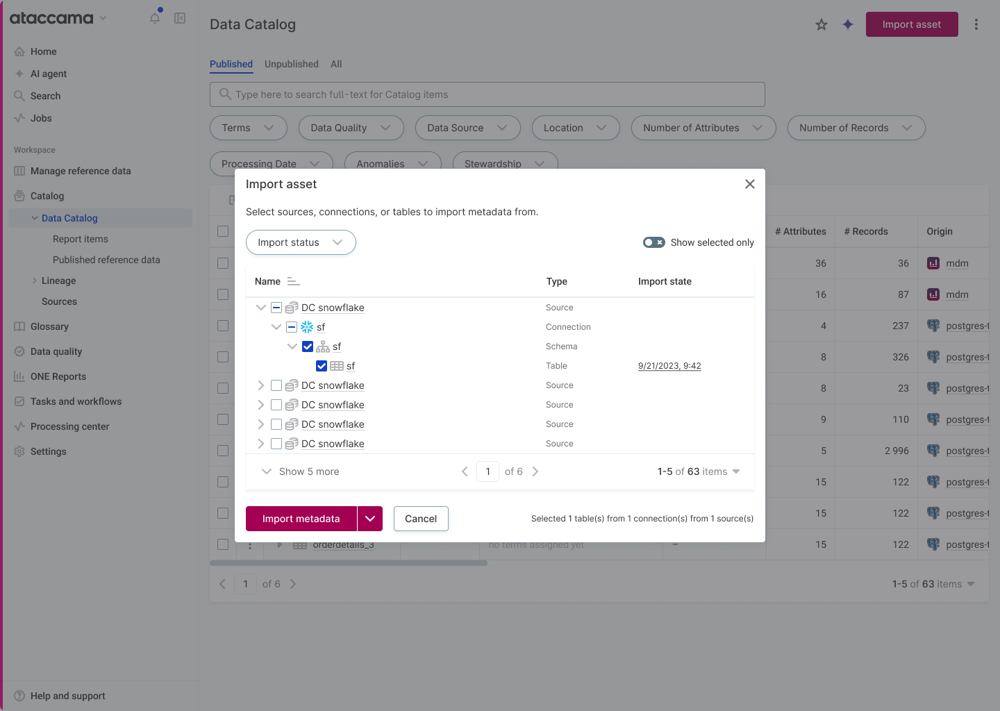
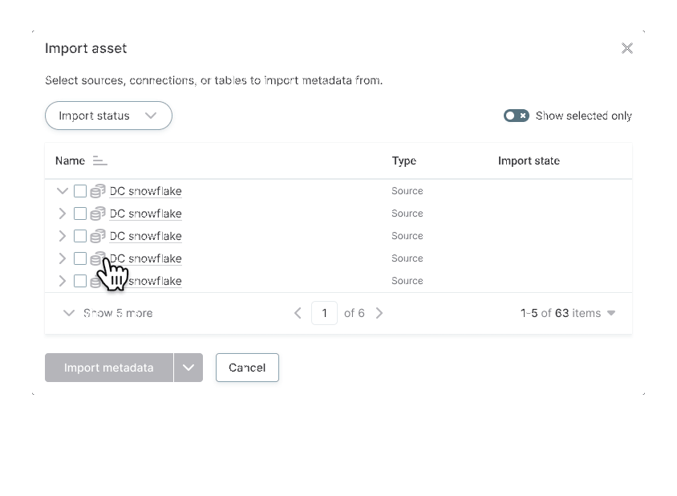

Ataccama ONE is an enterprise data governance platform. The Data Catalog is where data stewards, analysts, and consultants discover what data the organization owns. Before they can govern data, they need to import its metadata, schema, types, structure, from a connected database.
It's a high-frequency action performed by the same handful of people, over and over. It was also one of the most fragmented flows in the product.
To import metadata, a user had to leave the catalog, navigate to a source, open its Connections tab, expand a tree, select tables, and click Import. The flow was technically possible, but forced users into mental bookkeeping the product should have done for them.
"Import asset" button opens a modal rooted at Source level. One session can span the entire catalog.
Rooted at Source level so one session can span multiple sources. Lazy-loaded children with indeterminate-state checkboxes for partial selection. A real-language selection summary that counts only the leaves that actually import.


Rooting the tree at the system level meant a single import session could span the entire catalog.
Enterprise tenants have thousands of tables. The tree fetches children only on expand, with a spinner-in-chevron loading state.
"X tables from Y connections from Z sources", counts only the leaves that actually import, qualified by their parents.
SplitButton + Cancel always visible. The modal exists for importing, the primary action shouldn't hide.
Every "small" UI decision was implicitly making a load-bearing assumption about how customers use the product.
From the design crit retrospective
Walked through the existing flow as a user. Documented the six-click sequence. Identified that the existing ConnectionBrowseTree could be the foundation, but its root level was wrong for the new flow.
Designed in Figma with Flamingo primitives. Built five states: Initial, Browsing, Selected, Show Selected Only, Loading.
Five reviewers across design and frontend. Ten pieces of feedback. Selection-counter language, toolbar placement, modal density, and pagination model all changed.
Refined typography, density, paginator scope. Wrote a full handoff doc enumerating every element, state, interaction, components used, and open engineering questions.
"Items" is ambiguous when one item could be one connection or one table, and they don't equal each other.
Pick one. Combining them creates an interaction model engineers can't ship and users can't predict.
This modal can spawn thousands of background jobs. Safeguards belong in the UI, not bolted on after.